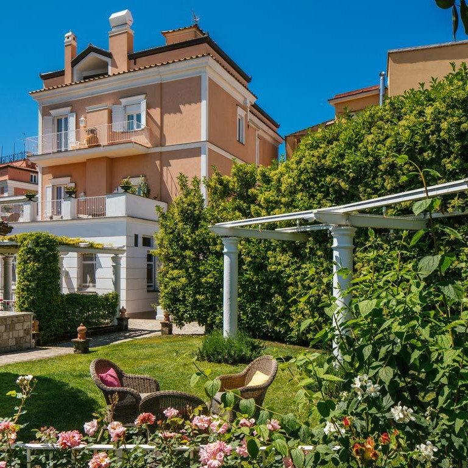
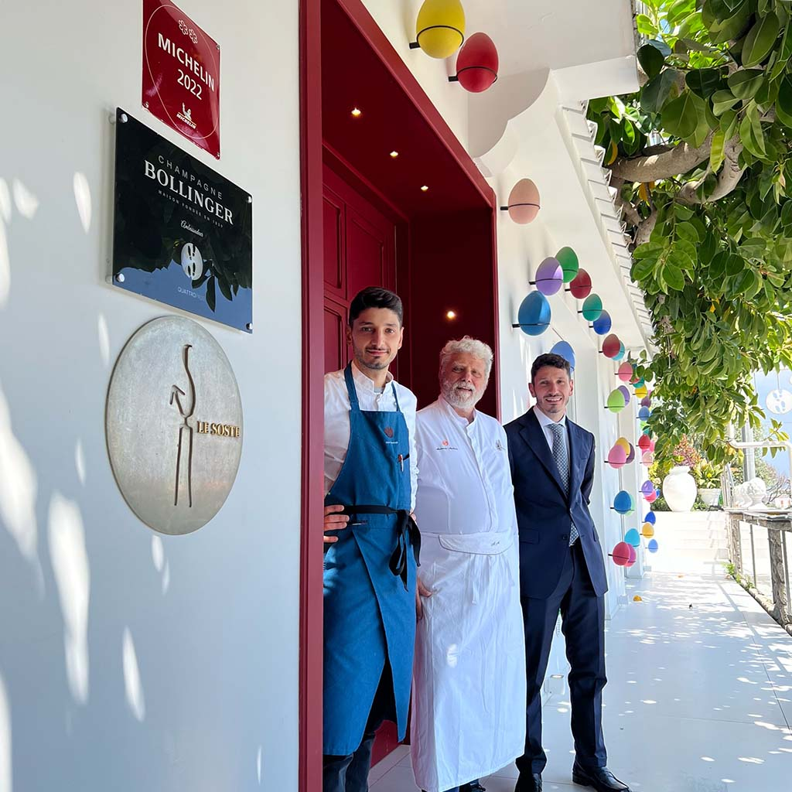

<style>
  .tg {
    --paper: #f3ece0;
    --paper-2: #ece3d3;
    --ink: #1d1a16;
    --ink-mute: #5a4e3f;
    --rule: #2a221b;
    --blue: #1c3a5a;
    --blue-deep: #0f2742;
    --terra: #b85a2e;
    --lemon: #d9a93a;
    --olive: #6a6a3a;
    --serif: "Playfair Display", "EB Garamond", "Cormorant Garamond", Georgia, serif;
    --body: "EB Garamond", "Cormorant Garamond", Georgia, serif;
    --sc: "Cormorant SC", "Playfair Display", Georgia, serif;

    background: var(--paper);
    color: var(--ink);
    font-family: var(--body);
    font-size: 19px;
    line-height: 1.62;
    margin: 0;
    padding: 0;
  }
  .tg a { color: var(--blue-deep); text-decoration: underline; text-decoration-thickness: 1px; text-underline-offset: 2px; }
  .tg a:hover { color: var(--terra); }
  .tg sup a { text-decoration: none; }

  /* === Masthead === */
  .masthead {
    background: var(--rule);
    color: var(--paper);
    padding: 0.8rem 2rem;
    display: flex;
    align-items: baseline;
    justify-content: space-between;
    font-family: var(--sc);
    letter-spacing: 0.18em;
    text-transform: uppercase;
    font-size: 0.78rem;
    border-bottom: 4px double #b89a5e;
  }
  .masthead .brand { font-family: var(--serif); font-style: italic; font-size: 1.15rem; letter-spacing: 0.05em; text-transform: none; color: #e7d9b3; }
  .masthead .brand span { color: var(--lemon); }
  .masthead .meta { color: #c8b88f; }

  /* === Cover === */
  .cover {
    position: relative;
    overflow: hidden;
    background: linear-gradient(180deg, #b8d4e8 0%, #4a7ba0 60%, #1c3a5a 100%);
    color: #fff;
  }
  .cover-img {
    position: absolute; inset: 0;
    background-image: url('travelogue/images/punta-campanella-capri.webp');
    background-size: cover;
    background-position: center 35%;
    filter: brightness(0.78) contrast(1.05) saturate(1.05);
  }
  .cover-img::after {
    content: "";
    position: absolute; inset: 0;
    background:
      linear-gradient(180deg, rgba(0,0,0,0.05) 0%, rgba(0,0,0,0.0) 30%, rgba(0,0,0,0.0) 55%, rgba(15,30,55,0.55) 100%),
      linear-gradient(90deg, rgba(15,30,55,0.35) 0%, rgba(15,30,55,0.0) 45%);
  }
  .cover-text {
    position: relative;
    padding: 5.5rem 2.5rem 4rem;
    max-width: 1100px;
  }
  .cover-kicker {
    font-family: var(--sc);
    text-transform: uppercase;
    letter-spacing: 0.34em;
    font-size: 0.85rem;
    color: var(--lemon);
    margin-bottom: 1.2rem;
    display: flex;
    align-items: center;
    gap: 0.9rem;
  }
  .cover-kicker .rule { display: inline-block; width: 38px; height: 1px; background: var(--lemon); }
  .cover h1 {
    font-family: var(--serif);
    font-weight: 700;
    font-style: italic;
    font-size: clamp(2.6rem, 6vw, 5rem);
    line-height: 1.02;
    margin: 0 0 1rem;
    max-width: 16ch;
    text-shadow: 0 2px 22px rgba(0,0,0,0.45);
  }
  .cover h1 em { font-style: normal; font-weight: 400; color: #f3d98a; }
  .cover-deck {
    font-family: var(--serif);
    font-size: clamp(1.05rem, 1.6vw, 1.35rem);
    font-style: italic;
    max-width: 48ch;
    line-height: 1.5;
    color: #f5ecd9;
    text-shadow: 0 1px 8px rgba(0,0,0,0.5);
    margin-bottom: 1.5rem;
  }
  .cover-byline {
    font-family: var(--sc);
    text-transform: uppercase;
    letter-spacing: 0.22em;
    font-size: 0.72rem;
    color: #e7d9b3;
    border-top: 1px solid rgba(255,255,255,0.4);
    padding-top: 0.9rem;
    max-width: 30rem;
  }
  .cover-byline strong { color: var(--lemon); font-weight: 500; }
  .cover-credit {
    position: absolute;
    right: 1rem; bottom: 0.7rem;
    font-family: var(--body);
    font-size: 0.68rem;
    font-style: italic;
    color: rgba(255,255,255,0.7);
    text-shadow: 0 1px 3px rgba(0,0,0,0.5);
  }

  /* === Body === */
  .body { max-width: 1100px; margin: 0 auto; padding: 3rem 2rem 2rem; }
  .section-tag {
    font-family: var(--sc);
    text-transform: uppercase;
    letter-spacing: 0.28em;
    font-size: 0.78rem;
    color: var(--terra);
    margin: 0 0 0.6rem;
  }
  .h2 {
    font-family: var(--serif);
    font-style: italic;
    font-weight: 700;
    font-size: clamp(1.7rem, 3vw, 2.4rem);
    line-height: 1.1;
    margin: 0 0 1.2rem;
    color: var(--blue-deep);
  }
  .lede {
    font-family: var(--serif);
    font-size: 1.25rem;
    line-height: 1.55;
    max-width: 62ch;
    margin: 0 auto 2.5rem;
    text-align: justify;
    hyphens: auto;
  }
  .lede::first-letter {
    font-family: var(--serif);
    font-size: 5.5rem;
    line-height: 0.85;
    float: left;
    padding: 0.35rem 0.7rem 0 0;
    color: var(--terra);
    font-weight: 700;
  }
  .ornament {
    text-align: center;
    color: var(--terra);
    letter-spacing: 1rem;
    margin: 2.2rem 0;
    font-size: 1rem;
  }

  /* === Verdict box === */
  .verdict {
    background: var(--paper-2);
    border: 1px solid #cbb787;
    border-left: 5px solid var(--terra);
    padding: 1.4rem 1.6rem;
    margin: 0 auto 2.5rem;
    max-width: 62ch;
    font-family: var(--serif);
  }
  .verdict .label {
    font-family: var(--sc);
    text-transform: uppercase;
    letter-spacing: 0.22em;
    font-size: 0.78rem;
    color: var(--terra);
    margin-bottom: 0.4rem;
  }
  .verdict p { margin: 0.4rem 0; font-size: 1.05rem; }

  /* === Two columns body === */
  .twocol { columns: 2; column-gap: 2.5rem; column-rule: 1px solid #d8cdb5; max-width: 100%; }
  .twocol p { margin: 0 0 0.9rem; text-align: justify; hyphens: auto; }
  .twocol p:first-child { margin-top: 0; }
  @media (max-width: 760px) { .twocol { columns: 1; } }

  /* === Plans grid (Plan A / B / C) === */
  .plans {
    display: grid;
    grid-template-columns: repeat(3, 1fr);
    gap: 1.2rem;
    margin: 2.5rem 0;
  }
  @media (max-width: 800px) { .plans { grid-template-columns: 1fr; } }
  .plan {
    background: #fbf6ea;
    border: 1px solid #cbb787;
    padding: 1.4rem 1.3rem 1.2rem;
    position: relative;
  }
  .plan.a { background: #efe6d2; opacity: 0.85; }
  .plan.a::after {
    content: "CLOSED";
    position: absolute;
    top: 1.1rem; right: 1.1rem;
    font-family: var(--sc);
    letter-spacing: 0.18em;
    font-size: 0.72rem;
    background: var(--terra);
    color: #fff;
    padding: 0.18rem 0.5rem;
    transform: rotate(3deg);
  }
  .plan .badge {
    font-family: var(--sc);
    text-transform: uppercase;
    letter-spacing: 0.24em;
    font-size: 0.72rem;
    color: var(--terra);
    margin-bottom: 0.4rem;
  }
  .plan h3 {
    font-family: var(--serif);
    font-style: italic;
    font-size: 1.45rem;
    margin: 0 0 0.6rem;
    color: var(--blue-deep);
    line-height: 1.15;
  }
  .plan .sub {
    font-family: var(--serif);
    font-size: 0.95rem;
    color: var(--ink-mute);
    margin-bottom: 0.9rem;
    font-style: italic;
  }
  .plan p { font-size: 0.97rem; margin: 0.4rem 0; }
  .plan .spec {
    font-family: var(--sc);
    text-transform: uppercase;
    letter-spacing: 0.14em;
    font-size: 0.72rem;
    color: var(--ink-mute);
    margin-top: 0.9rem;
    border-top: 1px dotted #b89a5e;
    padding-top: 0.6rem;
  }

  /* === Photo with caption === */
  .photo {
    margin: 2rem 0;
    text-align: center;
  }
  .photo img {
    display: block;
    max-width: 100%;
    height: auto;
    margin: 0 auto;
    border-radius: 2px;
  }
  .photo figcaption {
    font-family: var(--serif);
    font-style: italic;
    font-size: 0.9rem;
    color: var(--ink-mute);
    margin-top: 0.7rem;
    max-width: 50ch;
    margin-left: auto;
    margin-right: auto;
    line-height: 1.4;
  }
  .photo figcaption strong {
    font-style: normal;
    font-family: var(--sc);
    text-transform: uppercase;
    letter-spacing: 0.14em;
    font-size: 0.72rem;
    color: var(--terra);
    margin-right: 0.4rem;
  }

  /* === Pull quote === */
  .pullquote {
    margin: 3rem auto;
    max-width: 32ch;
    text-align: center;
    font-family: var(--serif);
    font-style: italic;
    font-weight: 700;
    font-size: 2.1rem;
    line-height: 1.18;
    color: var(--blue-deep);
    padding: 0 1rem;
    position: relative;
  }
  .pullquote::before, .pullquote::after {
    display: block;
    color: var(--terra);
    font-size: 1.2rem;
    letter-spacing: 0.6rem;
    margin: 0.6rem 0;
  }
  .pullquote::before { content: "✦   ✦   ✦"; }
  .pullquote::after { content: "✦   ✦   ✦"; }

  /* === Sidebar / itinerary === */
  .sidebar {
    background: #fbf6ea;
    border: 1px solid #cbb787;
    padding: 1.6rem 1.6rem 1.4rem;
    margin: 2rem 0;
  }
  .sidebar .label {
    font-family: var(--sc);
    text-transform: uppercase;
    letter-spacing: 0.24em;
    font-size: 0.8rem;
    color: var(--terra);
    border-bottom: 1px solid var(--terra);
    padding-bottom: 0.4rem;
    margin-bottom: 1rem;
    display: flex;
    align-items: center;
    gap: 0.5rem;
  }
  .sidebar .label::before {
    content: "§";
    font-family: var(--serif);
    font-size: 1.1rem;
    font-style: italic;
  }
  .sidebar h3 {
    font-family: var(--serif);
    font-style: italic;
    font-size: 1.6rem;
    margin: 0 0 0.6rem;
    color: var(--blue-deep);
  }
  .itinerary {
    display: grid;
    grid-template-columns: 1fr 1fr;
    gap: 1.6rem;
  }
  @media (max-width: 760px) { .itinerary { grid-template-columns: 1fr; } }
  .day h4 {
    font-family: var(--sc);
    text-transform: uppercase;
    letter-spacing: 0.22em;
    font-size: 0.85rem;
    color: var(--terra);
    margin: 0 0 0.6rem;
    padding-bottom: 0.3rem;
    border-bottom: 1px dotted #b89a5e;
  }
  .day ul { list-style: none; padding: 0; margin: 0; }
  .day li { display: grid; grid-template-columns: 4.5rem 1fr; gap: 0.6rem; margin: 0.4rem 0; font-size: 0.96rem; }
  .day li .time { font-family: var(--sc); font-weight: 600; color: var(--blue-deep); }
  .day li .what { color: var(--ink); }

  /* === Where to stay grid === */
  .stays {
    display: grid;
    grid-template-columns: repeat(2, 1fr);
    gap: 1.6rem;
    margin: 1.5rem 0 2rem;
  }
  @media (max-width: 800px) { .stays { grid-template-columns: 1fr; } }
  .stay {
    background: #fff;
    border: 1px solid #d8cdb5;
    overflow: hidden;
    display: flex;
    flex-direction: column;
  }
  .stay .photo-block {
    height: 200px;
    background-size: cover;
    background-position: center;
    position: relative;
  }
  .stay .photo-block::after {
    content: "";
    position: absolute; inset: 0;
    background: linear-gradient(180deg, rgba(0,0,0,0) 50%, rgba(0,0,0,0.45) 100%);
  }
  .stay .photo-block .pin {
    position: absolute;
    bottom: 0.7rem; left: 0.9rem;
    color: #fff;
    font-family: var(--sc);
    text-transform: uppercase;
    letter-spacing: 0.18em;
    font-size: 0.75rem;
    z-index: 1;
  }
  .stay .body {
    padding: 1rem 1.1rem 1.1rem;
    flex: 1;
  }
  .stay h4 {
    font-family: var(--serif);
    font-style: italic;
    font-size: 1.35rem;
    margin: 0 0 0.3rem;
    color: var(--blue-deep);
    line-height: 1.2;
  }
  .stay .stay-meta {
    font-family: var(--sc);
    text-transform: uppercase;
    letter-spacing: 0.14em;
    font-size: 0.72rem;
    color: var(--ink-mute);
    margin-bottom: 0.5rem;
  }
  .stay p { font-size: 0.92rem; margin: 0.3rem 0; }
  .stay .verdict-tag {
    margin-top: 0.7rem;
    font-family: var(--sc);
    text-transform: uppercase;
    letter-spacing: 0.16em;
    font-size: 0.72rem;
    color: var(--terra);
    border-top: 1px dotted #b89a5e;
    padding-top: 0.6rem;
  }

  /* === Activities === */
  .activities {
    display: grid;
    grid-template-columns: repeat(3, 1fr);
    gap: 1.4rem;
    margin: 1.5rem 0 2rem;
  }
  @media (max-width: 900px) { .activities { grid-template-columns: 1fr 1fr; } }
  @media (max-width: 600px) { .activities { grid-template-columns: 1fr; } }
  .act {
    background: #fbf6ea;
    border: 1px solid #cbb787;
    padding: 0 0 1rem;
    overflow: hidden;
  }
  .act .top {
    height: 140px;
    background-size: cover;
    background-position: center;
    border-bottom: 1px solid #cbb787;
  }
  .act .label-row {
    font-family: var(--sc);
    text-transform: uppercase;
    letter-spacing: 0.18em;
    font-size: 0.7rem;
    color: var(--terra);
    margin: 0.9rem 1rem 0.3rem;
  }
  .act h4 {
    font-family: var(--serif);
    font-style: italic;
    font-size: 1.2rem;
    margin: 0 1rem 0.4rem;
    color: var(--blue-deep);
    line-height: 1.2;
  }
  .act p { font-size: 0.92rem; margin: 0.3rem 1rem; }

  /* === Calendar / dates callout === */
  .calendar {
    background: var(--blue-deep);
    color: #f3ece0;
    padding: 2rem 2rem;
    margin: 2.5rem 0;
    display: grid;
    grid-template-columns: 1fr 2fr;
    gap: 2rem;
    align-items: center;
  }
  @media (max-width: 700px) { .calendar { grid-template-columns: 1fr; } }
  .calendar .date {
    font-family: var(--serif);
    text-align: center;
  }
  .calendar .date .mo {
    font-family: var(--sc);
    text-transform: uppercase;
    letter-spacing: 0.3em;
    font-size: 0.85rem;
    color: var(--lemon);
  }
  .calendar .date .day {
    font-size: 5.5rem;
    line-height: 1;
    font-weight: 700;
    font-style: italic;
    color: #fff;
    margin: 0.3rem 0;
  }
  .calendar .date .yr {
    font-family: var(--sc);
    letter-spacing: 0.2em;
    font-size: 0.85rem;
    color: var(--lemon);
  }
  .calendar .text h3 {
    font-family: var(--serif);
    font-style: italic;
    font-size: 1.5rem;
    margin: 0 0 0.6rem;
    color: #fff;
  }
  .calendar .text p { margin: 0.3rem 0; font-size: 1rem; color: #e7d9b3; }
  .calendar .text a { color: var(--lemon); }

  /* === Driving warning === */
  .driving {
    background: #fbeeda;
    border: 1px solid #d9a93a;
    border-left: 5px solid #b85a2e;
    padding: 1.3rem 1.5rem;
    margin: 2rem 0;
    font-family: var(--serif);
    font-size: 1rem;
  }
  .driving .tag {
    font-family: var(--sc);
    text-transform: uppercase;
    letter-spacing: 0.24em;
    font-size: 0.78rem;
    color: var(--terra);
    margin-bottom: 0.4rem;
  }

  /* === Sister chapters / read next === */
  .read-next {
    border-top: 4px double #b89a5e;
    border-bottom: 4px double #b89a5e;
    padding: 2rem 0;
    margin: 3rem 0 1.5rem;
  }
  .read-next .head {
    text-align: center;
    margin-bottom: 1.6rem;
  }
  .read-next .head .label {
    font-family: var(--sc);
    text-transform: uppercase;
    letter-spacing: 0.34em;
    font-size: 0.85rem;
    color: var(--terra);
  }
  .read-next .head h3 {
    font-family: var(--serif);
    font-style: italic;
    font-size: 2rem;
    color: var(--blue-deep);
    margin: 0.3rem 0 0;
  }
  .chapters {
    display: grid;
    grid-template-columns: repeat(4, 1fr);
    gap: 1.2rem;
  }
  @media (max-width: 900px) { .chapters { grid-template-columns: 1fr 1fr; } }
  @media (max-width: 500px) { .chapters { grid-template-columns: 1fr; } }
  .chapter {
    border-top: 1px solid var(--terra);
    padding-top: 0.7rem;
  }
  .chapter .ch-no {
    font-family: var(--serif);
    font-style: italic;
    font-size: 0.9rem;
    color: var(--terra);
    margin-bottom: 0.3rem;
  }
  .chapter h4 {
    font-family: var(--serif);
    font-style: italic;
    font-size: 1.15rem;
    line-height: 1.25;
    margin: 0 0 0.4rem;
    color: var(--blue-deep);
  }
  .chapter h4 a { text-decoration: none; color: inherit; }
  .chapter h4 a:hover { color: var(--terra); }
  .chapter p { font-size: 0.88rem; color: var(--ink-mute); margin: 0.3rem 0; }
  .chapter .depth {
    font-family: var(--sc);
    text-transform: uppercase;
    letter-spacing: 0.18em;
    font-size: 0.7rem;
    color: var(--terra);
  }

  /* === Colophon === */
  .colophon {
    background: var(--rule);
    color: #d4c89e;
    padding: 2.5rem 2rem 2rem;
    font-family: var(--body);
    font-size: 0.85rem;
    line-height: 1.55;
  }
  .colophon h4 {
    font-family: var(--sc);
    text-transform: uppercase;
    letter-spacing: 0.28em;
    font-size: 0.82rem;
    color: var(--lemon);
    margin: 0 0 1rem;
    border-bottom: 1px solid #4a3f30;
    padding-bottom: 0.4rem;
  }
  .colophon a { color: #e7d9b3; }
  .colophon a:hover { color: var(--lemon); }
  .colophon ol { padding-left: 1.3rem; margin: 0; columns: 2; column-gap: 2rem; }
  @media (max-width: 700px) { .colophon ol { columns: 1; } }
  .colophon li { margin: 0.3rem 0; break-inside: avoid; }
  .colophon .signoff {
    text-align: center;
    font-family: var(--serif);
    font-style: italic;
    font-size: 1rem;
    color: var(--lemon);
    margin-top: 2rem;
    padding-top: 1.2rem;
    border-top: 1px solid #4a3f30;
  }
</style>

<article class="tg">

  <header class="masthead">
    <div class="brand"><em>The</em> Tyrrhenian <span>·</span> Edit</div>
    <div class="meta">Weekend Dispatch № 17 · Spring 2026</div>
    <div>Campania · Sorrento Peninsula</div>
  </header>

  <section class="cover">
    <div class="cover-img"></div>
    <div class="cover-text">
      <div class="cover-kicker"><span class="rule"></span> A Saturday-Dinner Weekend · Reconsidered</div>
      <h1>The Quiet <em>Cove</em><br>and the <em>Vanished</em> Table</h1>
      <p class="cover-deck">A weekend on the Sorrento Peninsula's southern lip was once anchored on a single dinner. Then the kitchen closed. What survives — and what becomes — when the centre of a trip moves.</p>
      <div class="cover-byline">
        <strong>By the Atlas Editors</strong> · Reported from <a href="https://www.massalubrenseturismo.it/en/punta-campanella/">Nerano, Massa Lubrense and Sant'Agata sui Due Golfi</a>
      </div>
      <div class="cover-credit">Photograph: Punta della Campanella with Capri beyond — courtesy Massa Lubrense Tourism</div>
    </div>
  </section>

  <div class="body">

    <p class="lede">
      The brief was straightforward enough: book a Saturday dinner at <a href="https://www.ristorantequattropassi.it/en/quattro-passi">Quattro Passi</a>, sleep within walking distance, fill the surrounding days within a thirty-kilometre radius. Nerano village would do the rest — fishermen's cove, deep-water bay, the slow descent from <a href="https://www.massalubrenseturismo.it/en/punta-campanella/">Punta Campanella</a> on one side and the open Tyrrhenian on the other. In January the whole tourist-accommodation complex was seized over building-permit issues<sup><a href="https://en.cronachedellacampania.it/2026/01/sequestrato-ristorante-quattro-passi-di-nerano/">[1]</a></sup>, and on 18 May the Mellino family confirmed that their two-Michelin-star room would not reopen for the 2026 season; the merits hearing falls in October<sup><a href="https://www.italiaatavola.net/attualita-mercato/2026/5/18/quattro-passi-salta-stagione-2026-niente-riapertura-ristorante-tre-stelle/119254/">[2]</a></sup>. The trip, as conceived, no longer exists. What follows is what to do about it.
    </p>

    <div class="ornament">✦ ✦ ✦</div>

    <div class="verdict">
      <div class="label">The Verdict</div>
      <p>Keep Nerano if you came for the cove — sleep on the bay, switch your Saturday dinner to <a href="https://www.booking.com/hotel/it/locanda-del-capitano.en-gb.html">Taverna del Capitano</a> on the same beachfront, and take the only thing this corner of the peninsula does that Sorrento cannot: a Coop Sant'Antonio boat from the marina<sup><a href="https://www.coopsantonio.com/en/shared-tours">[6]</a></sup>.</p>
      <p>Move to Sant'Agata sui Due Golfi if you came for the dinner — <a href="https://guide.michelin.com/en/hotels-stays/sant-agata-sui-due-golfi/boutique-hotel-don-alfonso-1890-11286">Don Alfonso 1890</a>'s 1-starred kitchen, an 1890s house, a pre-Roman tunnel cellar<sup><a href="https://guide.michelin.com/en/hotels-stays/sant-agata-sui-due-golfi/boutique-hotel-don-alfonso-1890-11286">[13]</a></sup>. The cove becomes the morning boat departure, eleven taxi minutes away<sup><a href="https://www.rome2rio.com/s/Sant-Agata-sui-Due-Golfi/Nerano">[5]</a></sup>.</p>
    </div>

    <p class="section-tag">I. The Three Plans</p>
    <h2 class="h2">A trip without its centre</h2>

    <div class="twocol">
      <p>It is rare for a weekend itinerary to lose its anchor weeks before it is taken. The Mellino kitchen had occupied a peculiar position in any trip to this part of the peninsula: it justified the drive, justified the lodging premium, justified the choice of Nerano over Positano's cliffs or Sorrento's promenades. Without it, the calculus shifts.</p>
      <p>Three plans now compete for the weekend. The first is the original, and it is closed. The second keeps everything but the kitchen — same village, same cove, a star less, a 1-Michelin-star room <a href="https://www.booking.com/hotel/it/locanda-del-capitano.en-gb.html">Taverna del Capitano</a> two minutes' walk from the surf<sup><a href="https://www.italyheaven.co.uk/campania/marina-del-cantone/">[4]</a></sup>. The third changes the base entirely — eight kilometres up the spine to Sant'Agata sui Due Golfi, where <a href="https://guide.michelin.com/en/hotels-stays/sant-agata-sui-due-golfi/boutique-hotel-don-alfonso-1890-11286">Don Alfonso 1890</a> has held a star in an 1890s house since well before anyone in Nerano hung shingles. The choice is no longer between restaurants but between registers: cove or hill-town, beach mornings or hill-town mornings, ten minutes by taxi the wrong way for the boat trip you wanted.</p>
    </div>

    <div class="plans">
      <div class="plan a">
        <div class="badge">Plan A · Original</div>
        <h3>Quattro Passi</h3>
        <div class="sub">2★ · Nerano village · <a href="https://www.ristorantequattropassi.it/en/quattro-passi">official site</a></div>
        <p>Sleep next door at the seven-room <a href="https://www.booking.com/hotel/it/quattro-passi-relais.html">Relais</a>, walk one minute from dinner to bed.</p>
        <p>Closed for the 2026 season per the Mellino family<sup><a href="https://www.italiaatavola.net/attualita-mercato/2026/5/18/quattro-passi-salta-stagione-2026-niente-riapertura-ristorante-tre-stelle/119254/">[2]</a></sup>. The Relais is part of the seized complex<sup><a href="https://en.cronachedellacampania.it/2026/01/sequestrato-ristorante-quattro-passi-di-nerano/">[1]</a></sup> but still bookable online for 2026<sup><a href="https://www.booking.com/hotel/it/quattro-passi-relais.html">[3]</a></sup> — get written confirmation before paying.</p>
        <div class="spec">Status · Suspended pending Oct 2026 hearing</div>
      </div>

      <div class="plan">
        <div class="badge">Plan B · Same Bay</div>
        <h3>Taverna del Capitano</h3>
        <div class="sub">1★ · Marina del Cantone · <a href="https://www.booking.com/hotel/it/locanda-del-capitano.en-gb.html">rooms & restaurant</a></div>
        <p>One star instead of two, but the same Marina del Cantone bay, with rooms above the kitchen — Booking 9.3/10<sup><a href="https://www.booking.com/hotel/it/locanda-del-capitano.en-gb.html">[12]</a></sup>.</p>
        <p>The trade-off: a 20–25-minute uphill walk back from any village-side wandering<sup><a href="https://www.italyheaven.co.uk/campania/marina-del-cantone/">[4]</a></sup>. The reward: dinner and bed solved in a single move, the boat trip launches from outside the door.</p>
        <div class="spec">Best for · Cove people, beach mornings, one-star pragmatism</div>
      </div>

      <div class="plan">
        <div class="badge">Plan C · Hill-Town</div>
        <h3>Don Alfonso 1890</h3>
        <div class="sub">1★ · Sant'Agata sui Due Golfi · <a href="https://guide.michelin.com/en/hotels-stays/sant-agata-sui-due-golfi/boutique-hotel-don-alfonso-1890-11286">Michelin Guide</a></div>
        <p>A starred restaurant in an 1890s house with a pre-Roman tunnel cellar<sup><a href="https://guide.michelin.com/en/hotels-stays/sant-agata-sui-due-golfi/boutique-hotel-don-alfonso-1890-11286">[13]</a></sup>; eleven minutes by taxi from Nerano (~€12–15)<sup><a href="https://www.rome2rio.com/s/Sant-Agata-sui-Due-Golfi/Nerano">[5]</a></sup>.</p>
        <p>The base shifts to the hill-town between two gulfs; the morning becomes a taxi to the marina; the question is whether that's still a Nerano weekend.</p>
        <div class="spec">Best for · Kitchen-first travellers, hill-town mornings</div>
      </div>
    </div>

    <figure class="photo">
      
      <figcaption><strong>Above</strong> The dining room at <a href="https://guide.michelin.com/en/hotels-stays/sant-agata-sui-due-golfi/boutique-hotel-don-alfonso-1890-11286">Don Alfonso 1890</a> in Sant'Agata sui Due Golfi — Plan C's argument, eight kilometres uphill from the cove.</figcaption>
    </figure>

    <p class="pullquote">Is this still a Nerano weekend with a different dinner — or a Sant'Agata weekend with Nerano as the morning boat?</p>

    <p class="section-tag">II. Where to Stay</p>
    <h2 class="h2">Five beds, ranged by register</h2>

    <p style="max-width: 62ch; margin: 0 auto 1.5rem; font-size: 1.05rem;">The cluster splits cleanly. <strong>Up at the village</strong> — Via Vespucci, the ridge above the cove<sup><a href="https://guide.michelin.com/en/campania/nerano_7770444/restaurant/quattro-passi">[17]</a></sup> — you walk to dinner on flat ground and into bed in ninety seconds. <strong>Down on the marina</strong> — the same bay, the same swimming, but a twenty-minute climb back<sup><a href="https://www.italyheaven.co.uk/campania/marina-del-cantone/">[4]</a></sup>, and the climb is the part nobody on Tripadvisor forgets. Choose the register first; the bed follows.</p>

    <div class="stays">

      <div class="stay">
        <div class="photo-block" style="background: linear-gradient(135deg, #4a7ba0 0%, #b85a2e 100%);">
          <div class="pin">Nerano Village · 1 min walk</div>
        </div>
        <div class="body">
          <h4><a href="https://www.booking.com/hotel/it/quattro-passi-relais.html">Quattro Passi Relais</a></h4>
          <div class="stay-meta">Adults-only · 7 rooms · pool · ~$600+/night</div>
          <p>Next door to the closed kitchen. Same complex; same legal status. Still showing 2026 availability<sup><a href="https://www.booking.com/hotel/it/quattro-passi-relais.html">[3]</a></sup>.</p>
          <p class="verdict-tag">Verdict · Confirm in writing before paying</p>
        </div>
      </div>

      <div class="stay">
        <div class="photo-block" style="background: linear-gradient(135deg, #1c3a5a 0%, #d9a93a 100%);">
          <div class="pin">Nerano Village · 2 min walk</div>
        </div>
        <div class="body">
          <h4><a href="https://www.villarena.it/">Villarena Relais</a></h4>
          <div class="stay-meta">Apartments · pool · organic farm · $122–$374</div>
          <p>Kitchen flats on the same street as Quattro Passi; reviewers' top condo in Nerano. Cooking classes on-site.</p>
          <p class="verdict-tag">Verdict · Best mid-range in the village</p>
        </div>
      </div>

      <div class="stay">
        <div class="photo-block" style="background-image: url('travelogue/images/hotel-certosa.png'); background-size: cover; background-position: center;">
          <div class="pin">Marina del Cantone · 20-25 min uphill</div>
        </div>
        <div class="body">
          <h4><a href="https://www.hotelcertosa.com/en/">Hotel La Certosa</a></h4>
          <div class="stay-meta">3★ · former 15th-c monastery · private beach</div>
          <p>Straight onto the sand, with a Carthusian monastery shell around the rooms. No elevator. SITA buses to Sorrento and Positano leave fifty metres from the door.</p>
          <p class="verdict-tag">Verdict · Beach mornings, no car</p>
        </div>
      </div>

      <div class="stay">
        <div class="photo-block" style="background: linear-gradient(135deg, #6a6a3a 0%, #1c3a5a 100%);">
          <div class="pin">Marina del Cantone · same bay</div>
        </div>
        <div class="body">
          <h4><a href="https://www.booking.com/hotel/it/locanda-del-capitano.en-gb.html">Taverna del Capitano</a></h4>
          <div class="stay-meta">Rooms above 1★ kitchen · Booking 9.3/10</div>
          <p>The pragmatic Plan B. Sleep above the restaurant solving Saturday dinner in the same move; surf outside the window.</p>
          <p class="verdict-tag">Verdict · Plan B's single best argument</p>
        </div>
      </div>
    </div>

    <p class="section-tag">III. The Itinerary</p>
    <h2 class="h2">A weekend on the cove, October-cool</h2>

    <div class="sidebar">
      <div class="label">Plan B Itinerary · The Bay Stays</div>
      <h3>Saturday & Sunday from Marina del Cantone</h3>
      <div class="itinerary">
        <div class="day">
          <h4>Saturday · The slow descent</h4>
          <ul>
            <li><span class="time">08:30</span><span class="what">Espresso at the village square; the FAI trailhead is two minutes from your cup<sup><a href="https://fondoambiente.it/baia-di-ieranto-eng/">[8]</a></sup>.</span></li>
            <li><span class="time">09:00</span><span class="what">Walk down to <a href="https://fondoambiente.it/baia-di-ieranto-eng/">Bay of Ieranto</a> — 50 minutes down through a FAI marine reserve, swim in the clearest cove on this side of the peninsula.</span></li>
            <li><span class="time">13:00</span><span class="what">Lunch at one of the marina trattorias; the spaghetti alla Nerano was invented thirty metres from where you'll be sitting.</span></li>
            <li><span class="time">15:30</span><span class="what">Nap. The climb back up the ridge is unkind.</span></li>
            <li><span class="time">20:00</span><span class="what">Dinner at <a href="https://www.booking.com/hotel/it/locanda-del-capitano.en-gb.html">Taverna del Capitano</a> — tasting menu, the bay outside the window.</span></li>
          </ul>
        </div>
        <div class="day">
          <h4>Sunday · By water</h4>
          <ul>
            <li><span class="time">09:30</span><span class="what">Board the <a href="https://www.coopsantonio.com/en/shared-tours">Coop Sant'Antonio</a> shared boat from the marina — €60 pp, Capri or Amalfi loop<sup><a href="https://www.coopsantonio.com/en/shared-tours">[6]</a></sup>.</span></li>
            <li><span class="time">12:30</span><span class="what">A long lunch off the boat; Faraglioni in the foreground, no scheduled ferry serves this marina<sup><a href="https://www.coopsantonio.com/en/shared-tours">[6]</a></sup>.</span></li>
            <li><span class="time">17:00</span><span class="what">Return; SITA bus or short taxi to Sorrento for the train home.</span></li>
            <li><span class="time">19:00</span><span class="what">Aperitivo before departure — a glass of Falanghina, the peninsula behind you.</span></li>
          </ul>
        </div>
      </div>
    </div>

    <p class="section-tag">IV. What to Do</p>
    <h2 class="h2">Four within thirty kilometres</h2>

    <div class="activities">

      <div class="act">
        <div class="top" style="background: linear-gradient(135deg, #4a7ba0 0%, #6a8e3e 100%); position: relative;">
          <div style="position: absolute; bottom: 0.5rem; left: 0.7rem; color: #fff; font-family: 'Cormorant SC', Georgia, serif; text-transform: uppercase; letter-spacing: 0.18em; font-size: 0.7rem;">From the village square</div>
        </div>
        <div class="label-row">Walk · 2.5 km · free</div>
        <h4><a href="https://fondoambiente.it/baia-di-ieranto-eng/">Bay of Ieranto</a></h4>
        <p>A FAI marine reserve trail from Nerano's main square, fifty minutes down to a cove almost no road touches<sup><a href="https://fondoambiente.it/baia-di-ieranto-eng/">[8]</a></sup>. The single Saturday-daytime activity that survives a late tasting menu.</p>
      </div>

      <div class="act">
        <div class="top" style="background-image: url('travelogue/images/coop-sant-antonio.png'); background-size: cover; background-position: center;"></div>
        <div class="label-row">Boat · day trip · €60 pp</div>
        <h4><a href="https://www.coopsantonio.com/en/shared-tours">Coop Sant'Antonio Boat</a></h4>
        <p>The marina's own fishermen's co-op runs shared tours to Capri and the Amalfi Coast<sup><a href="https://www.coopsantonio.com/en/shared-tours">[6]</a></sup>. The only thing only Nerano-based visitors get; sleep on the bay or it's a ~$80–100 taxi from Sorrento<sup><a href="https://www.rome2rio.com/s/Sorrento/Marina-del-Cantone">[7]</a></sup>.</p>
      </div>

      <div class="act">
        <div class="top" style="background-image: url('travelogue/images/punta-campanella.jpg'); background-size: cover; background-position: center;"></div>
        <div class="label-row">Walk · from Termini</div>
        <h4><a href="https://www.massalubrenseturismo.it/en/punta-campanella/">Punta Campanella</a></h4>
        <p>The Roman road to the peninsula's western tip departs from Termini — close enough to half a day from Nerano. Capri opposite, the open sea beyond<sup><a href="https://www.massalubrenseturismo.it/en/punta-campanella/">[18]</a></sup>.</p>
      </div>

      <div class="act">
        <div class="top" style="background-image: url('travelogue/images/pompeii.jpg'); background-size: cover; background-position: center;"></div>
        <div class="label-row">Drive · 36 km · ~51 min</div>
        <h4><a href="https://pompeiisites.org/en/">Pompeii</a></h4>
        <p>Just outside a strict 30-km radius, inside the practical day-trip envelope — via the A3<sup><a href="https://pompeiisites.org/en/">[19]</a></sup>. Costs half a day of road time; do not stack it with Path of the Gods.</p>
      </div>
    </div>

    <p class="section-tag">V. When to Go</p>
    <h2 class="h2">An October weekend with three claims</h2>

    <div class="calendar">
      <div class="date">
        <div class="mo">October</div>
        <div class="day">17</div>
        <div class="yr">Saturday · 2026</div>
      </div>
      <div class="text">
        <h3>Three things converge on this Saturday</h3>
        <p>· <a href="https://www.napolidevfest.it/">Napoli DevFest</a> at Città della Scienza, twenty-five kilometres up the coast — a marquee event for any traveller with a developer's excuse<sup><a href="https://www.napolidevfest.it/">[9]</a></sup>.</p>
        <p>· The week before (12–16 Oct), <a href="https://atpi.eventsair.com/icso-2026/">ICSO 2026</a> at the Hilton Sorrento Palace — the only marquee IT event on the peninsula itself in 2026<sup><a href="https://atpi.eventsair.com/icso-2026/">[10]</a></sup>.</p>
        <p>· October-cool weather, post-summer crowds, the Mellino merits hearing falling somewhere in the same month<sup><a href="https://www.italiaatavola.net/attualita-mercato/2026/5/18/quattro-passi-salta-stagione-2026-niente-riapertura-ristorante-tre-stelle/119254/">[2]</a></sup> — though too late to inform a 2026 booking either way.</p>
      </div>
    </div>

    <div class="driving">
      <div class="tag">A note on driving</div>
      <p>The 2026 Amalfi-side roads carry an alternate-plate restriction and aggressive ZTLs in Positano and Ravello<sup><a href="https://rentincosta.it/en/amalfi-coast-traffic-restrictions-2026-ztl/">[11]</a></sup>. Any car-based plan needs a SITA-bus fallback. The boat from the marina avoids the road question entirely.</p>
    </div>

    <figure class="photo">
      
      <figcaption><strong>Postscript</strong> The Quattro Passi dining room as it was. Image courtesy <a href="https://www.ristorantequattropassi.it/en/quattro-passi">ristorantequattropassi.it</a> — the kitchen's own photograph of a room that won't open for 2026.</figcaption>
    </figure>

    <div class="read-next">
      <div class="head">
        <div class="label">Continued Inside</div>
        <h3>The four sister chapters</h3>
      </div>
      <div class="chapters">
        <div class="chapter">
          <div class="ch-no">Chapter I</div>
          <h4><a href="../walking-distance-lodging-at-or-near-quattro-passi/">Walking-distance lodging at or near Quattro Passi</a></h4>
          <p>Where to sleep within a 1–25-minute walk of the cove, ridge and beach.</p>
          <p class="depth">survey · 4 min read</p>
        </div>
        <div class="chapter">
          <div class="ch-no">Chapter II</div>
          <h4><a href="../special-character-lodging-within-taxi-range-of-quattro-passi/">Special-character lodging within taxi range</a></h4>
          <p>Eleven character-driven beds, Nerano village to Sorrento town, with fares.</p>
          <p class="depth">survey · 7 min read</p>
        </div>
        <div class="chapter">
          <div class="ch-no">Chapter III</div>
          <h4><a href="../day-trips-and-activities-within-30-km-of-quattro-passi/">Day-trips and activities within 30 km</a></h4>
          <p>Boats, hikes, hill-towns and ruins inside a thirty-kilometre weekend envelope.</p>
          <p class="depth">expedition · 15 min read</p>
        </div>
        <div class="chapter">
          <div class="ch-no">Chapter IV</div>
          <h4><a href="../it-conferences-and-tech-events-within-30-km-of-quattro-passi/">IT conferences and tech events within 30 km</a></h4>
          <p>ICSO on the peninsula, Naples-side clusters at Federico II and beyond.</p>
          <p class="depth">survey · 4 min read</p>
        </div>
      </div>
    </div>

  </div>

  <footer class="colophon">
    <h4>Sources & Citations</h4>
    <ol>
      <li><a href="https://en.cronachedellacampania.it/2026/01/sequestrato-ristorante-quattro-passi-di-nerano/">Cronache della Campania</a> — seizure of the complex (Jan 2026).</li>
      <li><a href="https://www.italiaatavola.net/attualita-mercato/2026/5/18/quattro-passi-salta-stagione-2026-niente-riapertura-ristorante-tre-stelle/119254/">Italia a Tavola</a> — Mellino family confirms no 2026 reopening.</li>
      <li><a href="https://www.booking.com/hotel/it/quattro-passi-relais.html">Booking.com</a> — Quattro Passi Relais 2026 listing.</li>
      <li><a href="https://www.italyheaven.co.uk/campania/marina-del-cantone/">Italy Heaven</a> — Marina del Cantone guide.</li>
      <li><a href="https://www.rome2rio.com/s/Sant-Agata-sui-Due-Golfi/Nerano">Rome2Rio</a> — Sant'Agata to Nerano.</li>
      <li><a href="https://www.coopsantonio.com/en/shared-tours">Coop Sant'Antonio</a> — shared boat tours from Marina del Cantone.</li>
      <li><a href="https://www.rome2rio.com/s/Sorrento/Marina-del-Cantone">Rome2Rio</a> — Sorrento to Marina del Cantone.</li>
      <li><a href="https://fondoambiente.it/baia-di-ieranto-eng/">FAI</a> — Bay of Ieranto marine reserve.</li>
      <li><a href="https://www.napolidevfest.it/">Napoli DevFest 2026</a>.</li>
      <li><a href="https://atpi.eventsair.com/icso-2026/">ICSO 2026</a> — Hilton Sorrento Palace.</li>
      <li><a href="https://rentincosta.it/en/amalfi-coast-traffic-restrictions-2026-ztl/">Rent in Costa</a> — Amalfi 2026 traffic restrictions.</li>
      <li><a href="https://www.booking.com/hotel/it/locanda-del-capitano.en-gb.html">Booking.com</a> — Taverna (Locanda) del Capitano.</li>
      <li><a href="https://guide.michelin.com/en/hotels-stays/sant-agata-sui-due-golfi/boutique-hotel-don-alfonso-1890-11286">Michelin Guide</a> — Don Alfonso 1890.</li>
      <li><a href="https://www.ristorantequattropassi.it/en/quattro-passi">Ristorante Quattro Passi</a> — official site.</li>
      <li><a href="https://www.villarena.it/">Villarena Relais</a>.</li>
      <li><a href="https://www.hotelcertosa.com/en/">Hotel La Certosa</a>.</li>
      <li><a href="https://guide.michelin.com/en/campania/nerano_7770444/restaurant/quattro-passi">Michelin Guide</a> — Quattro Passi address.</li>
      <li><a href="https://www.massalubrenseturismo.it/en/punta-campanella/">Massa Lubrense Tourism</a> — Punta Campanella.</li>
      <li><a href="https://pompeiisites.org/en/">Pompeii Archaeological Park</a>.</li>
    </ol>
    <div class="signoff">— Reported, edited and laid out from the Atlas dispatch desk —</div>
  </footer>

</article>
